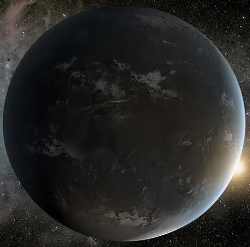

Kepler-62 f — Exoplaneta

Introdução e História
Kepler-62 f é um exoplaneta do tipo super-Terra orbitando a estrela Kepler-62, um astro menor e mais frio que o Sol, localizado a cerca de 1.200 anos-luz de distância, na constelação da Lira.
Foi descoberto em 2013 pelos dados coletados pela missão Kepler da NASA, por meio do método de trânsito, que detecta planetas observando a diminuição de brilho quando eles passam em frente à sua estrela.
Características Físicas: Massa, Tamanho e Órbita
Kepler-62 f tem um raio aproximadamente 1,4 vezes o da Terra, o que sugere que ele seja um planeta rochoso ou possua grande quantidade de água em sua composição.
Ele orbita sua estrela hospedeira em cerca de 267,3 dias terrestres, a uma distância aproximada de 0,72 UA, recebendo menos energia do que a Terra recebe do Sol devido à menor luminosidade da estrela.
A massa exata ainda é incerta, mas estimativas baseadas em modelos indicam que ela pode ser algumas vezes maior que a da Terra, compatível com um mundo do tipo super-Terra.
Potencial de Habitabilidade
- 💧 Zona Habitável: Kepler-62 f está localizado dentro da zona habitável de sua estrela, onde a água líquida poderia existir sob condições adequadas.
- 🌍 Temperatura e Ambiente: A temperatura de equilíbrio estimada é de aproximadamente 208 K, indicando que uma atmosfera mais densa poderia ser necessária para manter condições favoráveis à vida.
- ❓ Atmosfera Desconhecida: Ainda não há observações diretas que confirmem a presença ou composição de uma atmosfera.
Por esses motivos, Kepler-62 f é frequentemente citado como um dos exoplanetas mais promissores quando se discute habitabilidade fora do Sistema Solar, apesar das grandes incertezas existentes.
Curiosidades
Kepler-62 f é um dos dois planetas do sistema Kepler-62 que orbitam dentro da zona habitável; o outro é Kepler-62 e.
Ele aparece com frequência em estudos e simulações sobre mundos potencialmente habitáveis, mesmo estando a uma distância extremamente grande da Terra.
Todas as imagens conhecidas de Kepler-62 f são representações artísticas baseadas em dados científicos e modelos computacionais.
Origem do Nome
O nome “Kepler-62 f” segue a convenção astronômica científica: “Kepler-62” identifica a estrela hospedeira catalogada pela missão Kepler, enquanto a letra “f” indica a ordem de descoberta do planeta dentro do sistema.
Referências
- Wikipedia. Kepler-62f. Disponível em: https://pt.wikipedia.org/wiki/Kepler-62f. Acesso em: 27 dez. 2025.
- NASA. Kepler-62 f — Exoplanet Catalog. Disponível em: https://science.nasa.gov/exoplanet-catalog/kepler-62-f/. Acesso em: 27 dez. 2025.